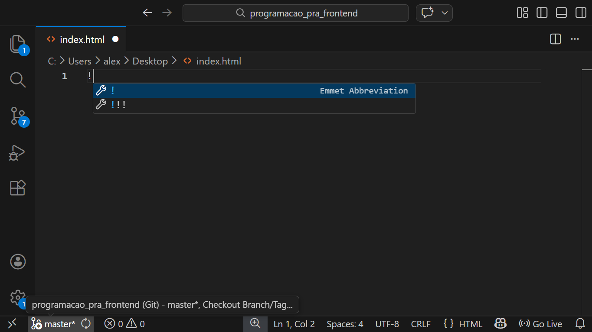

Introdução ao HTML
"Este é um pequeno passo para o homem, mas um salto gigantesco para a humanidade."
— Neil Armstrong
Olá, aluno(a)!
Neste capítulo, daremos início ao estudo da estrutura das páginas HTML, conhecendo seus elementos principais, tags e atributos de tags. Conhecer os elementos das páginas HTML de forma detalhada nos ajudará a entender a sua aplicação prática, sendo o primeiro passo para você se tornar um ótimo desenvolvedor front-end.
O conteúdo a ser visto nesta unidade é base para o entendimento completo da programação front-end, já que essa é um misto de diversas tecnologias, sendo as três principais o HTML, o CSS e o Javascript. É claro que o desenvolvimento das aplicações web mais modernas utiliza os famosos frameworks, como o Bootstrap, muito utilizado para estilização, e também o AngularJS e o React, utilizados para desenvolvimento de aplicações SPA (Single Page Application), mas para que alcancemos o desenvolvimento com todas essas tecnologias citadas, começaremos aprendendo a mais básica de todas elas, o HTML.
Aproveite esta jornada, caro(a) aluno(a), e enriqueça ainda mais seu conhecimento com o aprendizado deste livro. Teremos uma longa jornada pela frente, mas cada passo será fundamental para sua carreira.
Definição
Estrutura inicial do HTML
Praticamente todas as páginas web disponíveis hoje foram escritas - ou traduzidas de outras tecnologias - para HTML, CSS e Javascript, sendo essas as tecnologias que qualquer browser executa. Em todas as páginas HTML, há praticamente a mesma estrutura básica, escrita utilizando tags como em um arquivo XML (eXtensible Markup Language).
Independentemente da complexidade da página visualizada, essa mesma estrutura básica está lá, utilizada para encapsular todo o conteúdo da página. Vamos observar essa estrutura a seguir:
<!DOCTYPE html>
<html lang="en">
<head>
<meta charset="UTF-8">
<meta name="viewport" content="width=device-width, initial-scale=1.0">
<title>Document</title>
</head>
<body>
</body>
</html>
O código apresentado mostra a estrutura de uma simples página HTML, gerada automaticamente em um arquivo index.html no editor de código Microsoft Visual Studio Code com o snippet ! ou html:5. Observe que a estrutura possui poucas tags, e algumas tem sua função facilmente deduzíveis através de seus nomes, como é o caso das tags <html>, <head> e <body> e <title>, sendo a tag de estrutura principal, a tag de cabeça - ou cabeçalho -, a tag de corpo, e a tag de título, respectivamente.
Essas tags citadas organizam todo o conteúdo que será escrito no documento e renderizado como página no browser do usuário, como o título da página, os elementos de texto e imagens, links e principalmente controles de formulários de requisição. Todos esses elementos ficarão contidos dentro do conteúdo da tag <body>, entre seus delimitadores - <body> [CONTEÚDO DO BODY] </body>.
Por outro lado, temos tags que não são facilmente dedutíveis, como é o caso das tags <meta>, que aparece pelo menos duas vezes no código, além da tag <!DOCTYPE html>, que aparecem no início do documento. Veremos com calma a função de cada uma dessas tags na estrutura, mas o mais importante agora é que você entenda como iniciar um documento HTML utilizando as tags obrigaórias para isso.
Para facilitar seu entendimento, vou apresentar a seguir uma tabela contendo uma breve descrição de cada uma das tags vista na estrutura básica do HTML:
| Tag | Descrição |
|---|---|
<!DOCTYPE html> |
Tag responsável por identificar um documento HTML. 99% das páginas web são HTML. Essa tag é padronizada assim pelo HTML 5. |
<html lang="en"> |
Tag responsável por definir e conter toda a estrura da página, ou seja o <head> e <body>. O atributo lang="en" define o idioma da página. No Brasil usamos lang="pt-BR". |
<head> |
Tag responsável por delimitar o conteúdo de cabeçalho, isto é o título da página, definido pela tag <title> e as configurações de exibição definidas pelas tags <meta>. Essa tag também pode conter os links para páginas de estilização e arquivos de script. |
<meta charset="UTF-8"> |
Tag responsável pela configuração do conjunto de caracteres da página. O padrão é o UTF-8 |
<meta name="viewport" content="width=device-width, initial-scale=1.0"> |
Tag responsável pelo controle de responsividade da página em dispositivos móveis. Sem ela, os navegadores móveis simulam uma tela grande de desktop e depois reduzem a página inteira, o que deixa tudo pequeno. |
<title> |
Tag responsável por definir o título da página |
</title> |
Encerramento da tag <title> |
</head> |
Encerramento da tag </head> |
<body> |
Tag responsável por conter todo o conteúdo visível da página: títulos, textos, links, campos, imagens, etc. É a tag em que mais iremos trabalhar |
</body> |
Encerramento da tag <body> |
</html> |
Encerramento da tag <html> |
Elementos vazios e elementos de conteúdo
Vamos fazer uma parada para entender um conceito importante aqui. Você notou que todas as tags iniciaram com seus respectivos nomes, mas algumas encerraram na mesma linha e outras encerraram com uma outra tag, com o mesmo nome, porém com o caractere / (barra) na frente? Se sim, então você percebeu que existem elementos vazios, como no caso das tags <meta> e elementos de conteúdo, como nas tags <html></html>, <head></head>, <title></title> e <body></body>.
As tags de elementos vazios (Empty Elements) são tags que não possuem conteúdo interno, pois elas por si só já são consideradas a informação necessária. Elas podem ser metadados de informação, campos de formulários, imagens, links e até mesmo vinculação de arquivos de estilização. Elas sempre seguem essa estrutura:
<tag atributo1="valor1" atributo1="valor1"/>
Observe que a tag inicia e fecha com /> na mesma instrução, independentemente se a linha foi quebrada ou não.
Já os elementos que possuem conteúdo (Container elements), precisam abrir e fechar em tags separadas. Por exemplo:
<tag>
conteúdo
</tag>
Isso acontece porque muitas vezes o conteúdo desses elementos é muito grande, então a formatação do HTML divide abertura e o encerramento em tags separadas, sendo a última encerrada por </>. Geralmente essas tags são divisórias, títulos de página, parágrados, seções, artigos, e etc.
Atributos
Independentemente do tipo de elemento, qualquer um deles podem ter atributos, que são informações complementares do próprio elemento na página. Vimos no primeiro exemplo as tags <html lang="en">, com o atributo lang="en", e <meta name="viewport" content="width=device-width, initial-scale=1.0">, com os atributos name="viewport" e content="width=device-width, initial-scale=1.0".
Os atributos completam a informação do elemento, modificando seus valores e o comportamento da tela e dos elementos que os contém. Durante toda nossa jornada, vereremos a aplicação de atributos em quase todas os elementos, usados para estilização dimensionamento, atribuição de valores iniciais e até mesmo controle de do formulário de requisição.
Construindo a primeira página: index.html
Com os conhecimentos introdutórios aprendidos, vamos escrever nossa primeira página em HTML. À primeira vista, podemos criar um arquivo com qualquer nome, desde que a extensão do arquivo seja .html, para que tanto o editor de código possa reconhecer a linguagem quanto o browser renderize o conteúdo da página quando essa for requisitada.
No entanto, por se tratar da página inicial, recomendo que, ao criar o arquivo, você o nomeie com o nome index.html. Isso irá permitir que, ao requisitar a url de um servidor, local ou remoto, o arquivo possa ser exibido de forma automática, sem especificar seu nome após o texto da url.
O arquivo
index.html- ou com outras extensões, comoindex.php,index.jsp,index.aspx, etc. - é o primeiro arquivo a ser exibido, não sendo necessária a especificação do nome na url. O servidor web se encarrega que verificar se há um arquivo index e o retorna naturalmente na primeira requisição. Ex.:https://www.google.comem vez dehttps://www.google.com/index.html.
Após criar o arquivo index.html, coloque a estrutura básica do HTML no documento. Caso esteja utilizando algum editor de código, como o Microsoft Visual Studio Code, você pode digitar o caractere ! pressionar as teclas Ctrl + Espaço para listar os snippets do editor. Em seguida, você seleciona a primeira opção e pressiona Enter.

A estrutura que obteremos será a mesma do primeiro exemplo. Iremos fazer apenas duas modificações no código, sendo a mudança no título <title>Olá, Mundo!</html> e no corpo <body>Minha primeira página em HTML</body>. Observe:
<!DOCTYPE html>
<html lang="en">
<head>
<meta charset="UTF-8">
<meta name="viewport" content="width=device-width, initial-scale=1.0">
<title>Olá, Mundo!</title>
</head>
<body>
Minha primeira página em HTML
</body>
</html>
Após a digitação, podemos salvar o arquivo e dar dois cliques nele para o broser abrir. Caso você esteja utilizando algum servidor de páginas web, como o Xampp, Wampp, Apache, ou mesmo utilizando alguma extensão do vscode, como o Live Server, execute os comandos necessários para renderizar a página no navegador.
O resultao obtido será igual ou próximo a isto:
Conclusão
E assim chegamos ao final deste primeiro capítulo. Vimos a base dos conceitos para criar nossa primeira página web, entendemos o que são tags e atributos, além de visualizarmos a página construída diretamente por um browser.